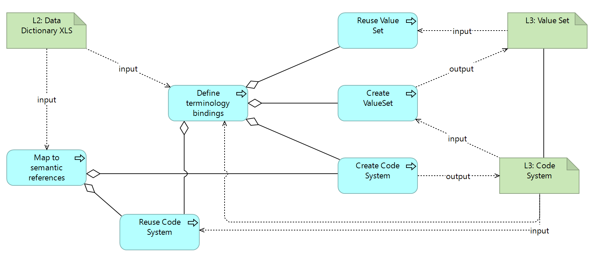

DRAFT SMART Guidelines L3 SOP
0.2.1 - CI Build

DRAFT SMART Guidelines L3 SOP
0.2.1 - CI Build

DRAFT SMART Guidelines L3 SOP, published by TBD. This guide is not an authorized publication; it is the continuous build for version 0.2.1 built by the FHIR (HL7® FHIR® Standard) CI Build. This version is based on the current content of https://github.com/WorldHealthOrganization/smart-ig-starter-kit and changes regularly. See the Directory of published versions
Code Systems are created when new codes need to be defined A special case of code system is when existing codes need to be complemented - for example adding designations in different languages to codes, or adding relationships between vaccine codes.
input/codesystems or input/fsh/codesystemsThe creation of a CodeSystem is typically driven by the following needs:
When a new property must be added to a concept in a codesystem, using a supplement CodeSystem
IMMZ.C.DE1). These are created for every new element in a logical model.This is the overview of the activities and related artifacts used:

| Tool | Usage | Doc |
|---|---|---|
| Sushi | ||
| OCL | ||
| tx.fhir.org |
SMART Guidelines - Immunizations (Measles): Code Systems